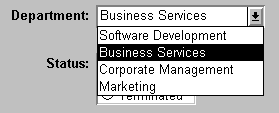
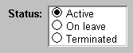
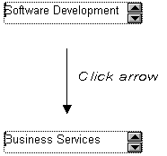
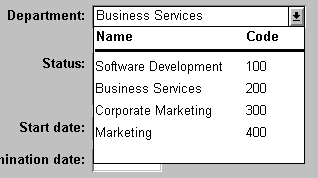
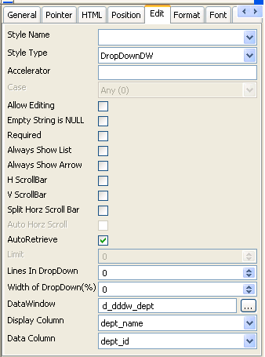

This section describes how to specify each type of edit style.
By default, columns use the Edit edit style, which displays data in an edit control. You can customize the appearance and behavior of the edit control by modifying a column's Edit edit style. To do so, select Edit in the Style Type drop-down list and specify the properties for that style:
 To use the Edit edit style:
To use the Edit edit style:
Select Edit from the Style Type box, if it is not already selected.
Select the properties you want.
 Date columns and regional settings Using the Edit edit style, or no edit style, with a date column
can cause serious data entry and validation problems if a user's
computer is set up to use a nonstandard date style, such as yyyy/dd/mm.
For example, if you enter 2001/03/05 in the Retrieval
Arguments dialog box for a date column when the mask is yyyy/dd/mm,
the date is interpreted as March 5 instead of May 3. To ensure that
the order of the day and month is interpreted correctly, use an EditMask
edit style.
Date columns and regional settings Using the Edit edit style, or no edit style, with a date column
can cause serious data entry and validation problems if a user's
computer is set up to use a nonstandard date style, such as yyyy/dd/mm.
For example, if you enter 2001/03/05 in the Retrieval
Arguments dialog box for a date column when the mask is yyyy/dd/mm,
the date is interpreted as March 5 instead of May 3. To ensure that
the order of the day and month is interpreted correctly, use an EditMask
edit style.
You can use the DropDownListBox edit style to have columns display as drop-down lists at runtime:

Typically, this edit style is used with code tables, where you can specify display values (which users see) and shorter data values (which are stored in the database).
In the DropDownListBox edit style, the display values of the code table display in the ListBox portion of the DropDownListBox. The data values are the values that are put in the DataWindow buffer (and sent to the database when an Update is issued) when the user selects an item in the ListBox portion of the drop-down list.
In the preceding example, when users see the value Business Services, the corresponding data value could be 200.
 To use the DropDownListBox edit style:
To use the DropDownListBox edit style:
Select DropDownListBox from the Style Type box.
Select the appropriate properties.
Enter the value you want to have appear in the Display Value box and the corresponding data value in the Data Value box.
You can define and modify a code table for a column in a script by using the SetValue method at runtime. To obtain the value of a column at runtime, use the GetValue method. To clear the code table of values, use the ClearValues method.
For more about code tables, see "Defining a code table".
If a column can take only one of two (or perhaps three) values, you might want to display the column as a check box; users can select or clear the check box to specify a value. In the following entry from a DataWindow object, users can simply check or clear a box to indicate whether an employee has health insurance:
 To use the CheckBox edit style:
To use the CheckBox edit style:
In the Text box, enter the text you want displayed next to the check box.
 Using accelerator keys If the CheckBox has an accelerator key, enter an ampersand
(&) before the letter in the text that represents the accelerator
key.
Using accelerator keys If the CheckBox has an accelerator key, enter an ampersand
(&) before the letter in the text that represents the accelerator
key.
In the Data Value For boxes, enter the values you want put in the DataWindow buffer when the CheckBox is checked (on) or unchecked (off).
If you selected the 3 States box, an optional third state box (other) appears, for the case when the condition is neither on nor off.
The value you enter in the Text box becomes the display value, and values entered for On, Off, and Other become the data values.
When users check or clear the check box at runtime, PowerBuilder enters the appropriate data value in its buffer. When the Update method is called, PowerBuilder sends the corresponding data values to the database.
You may find it useful to center check boxes used for columns of information. First make the text control used for the column header and the column control the same size and left aligned. Then you can center the check boxes and the column header.
 To center check boxes without text:
To center check boxes without text:
In the Edit property page for the column, make sure the Left Text check box is not selected and that the Text box where you specify associated text is empty.
In the General property page, specify centering (Alignment>Center) or specify centering using the StyleBar.
If a column can take one of a small number of values, you might want to display the column as radio buttons:

 To use the RadioButtons edit style:
To use the RadioButtons edit style:
Specify how many radio buttons will display in the Columns Across box.
Enter a set of display and data values for each button you want to display.
The display values you enter become the text of the buttons; the data values are put in the DataWindow buffer when the button is clicked.
 Using accelerator keys To use an accelerator key on a radio button, enter an ampersand
(&) in the Display Value before the letter that will be
the accelerator key.
Using accelerator keys To use an accelerator key on a radio button, enter an ampersand
(&) in the Display Value before the letter that will be
the accelerator key.
Users select values by clicking a radio button. When the Update method is issued, the data values are sent to the database.
Sometimes users need to enter data that has a fixed format. For example, in North America phone numbers have a 3-digit area code, followed by three digits, followed by four digits. You can define an edit mask that specifies the format to make it easier for users to enter values:
Edit masks consist of special characters that determine what can be entered in the column. They can also contain punctuation characters to aid users.
For example, to make it easier for users to enter phone numbers in the proper format, specify this mask:
(###) ###-####
At runtime, the punctuation characters display in the box and the cursor jumps over them as the user types:
Most edit masks use the same special characters as display formats, and there are special considerations for using numeric, string, date, and time masks. For information, see "Defining display formats".
The special characters you can use in string edit masks are different from those you can use in string display formats.
If you use the "#" or "a" special characters in a mask, Unicode characters, spaces, and other characters that are not alphanumeric do not display.
 Semicolons invalid in EditMask edit styles In a display format, you can use semicolons to separate sections
in number, date, time, and string formats. You cannot use semicolons
in an EditMask edit style.
Semicolons invalid in EditMask edit styles In a display format, you can use semicolons to separate sections
in number, date, time, and string formats. You cannot use semicolons
in an EditMask edit style.
Note the following about how certain keystrokes behave in edit masks:
Also, note certain behavior in Date edit masks:
[Edit Mask Behaviors]
AutocompleteDates=no
Click the button to the right of the Mask box on the Mask property page to display a list that contains complete masks that you can click to add to the mask box, as well as special characters that you can use to construct your own mask. For example, the menu for a Date edit mask contains complete masks such as mm/dd/yy and dd/mmm/yyyy. It also has components such as dd and jjj (for a Julian day). You might use these to construct a mask like dd-mm-yy, typing in the hyphens as separators.You cannot use a partial mask, such as dd or mmm, in a date edit mask. Any mask that does not include any characters representing the year will be replaced by a mask that does.
You can define a mask that contains "as is" characters that always appear in the control or column. For example, you might define a numeric mask such as Rs0000.00 to represent Indian rupees in a currency column.
However, you cannot enter a minus sign to represent negative numbers in a mask that contains "as is" characters, and the # special character is treated as a 0 character. As a result, if you specify a mask such as ###,##0.00EUR, a value such as 45,000 Euros would display with a leading zero: 045,000.00EUR. Note that you must always specify a mask that has enough characters to display all possible data values. If the mask does not have enough characters, for example if the mask is #,##0.00 and the value is 45000, the result is unpredictable.
The preferred method of creating a currency editmask is to use the predefined [currency(7)] - International mask. You can change the number in parentheses, which is the number of characters in the mask including two decimal places. When you use this mask, PowerBuilder uses the currency symbol and format defined in the regional settings section of the Windows control panel. You can enter negative values in a column that uses a currency mask.
You can define an edit mask as a spin control, a box that contains up and down arrows that users can click to cycle through fixed values. For example, you can set up a code table that provides the valid entries in a column; users simply click an arrow to select an entry. Used this way, a spin control works like a drop-down list that displays one value at a time:

For more about code tables, see "Defining a code table".
 To use an EditMask edit style:
To use an EditMask edit style:
Select EditMask in the Style Type box if it is not already selected.
Define the mask in the Mask box. Click the special characters in the pop-up menu to use them in the mask. To display the pop-up menu, click the button to the right of the Mask box.
Specify other properties for the edit mask.
When you use your EditMask, check its appearance and behavior. If characters do not appear as you expect, you might want to change the font size or the size of the EditMask.
You can use a drop-down calendar option on any DataWindow column with an EditMask edit style and a Date, DateTime, or TimeStamp datatype. The DDCalendar EditMask property option allows for separate selections of the calendar month, year, and date. This option can be set in a check box on the Edit page of the DataWindow painter Properties view when a column with the EditMask edit style is selected. It can also be set in code, as in this example for the birth_date column:
dw_1.Modify("birth_date.EditMask.DDCalendar='Yes'")
If you do not include script for client formatting in a Web DataWindow, the drop-down calendar uses a default edit mask to display the column data based on the client computer's default localization settings. To make sure that dates selected with the drop-down calendar option are displayed with the desired edit mask, specify that the Client Formatting option be included with the static JavaScript generated and deployed for the DataWindow.
To conserve bandwidth, JavaScript for client formatting is not included by default. To include this script, you can select the Client Formatting check box on the Web Generation tab of the DataWindow Properties view.
The drop-down calendar option is supported in all Web DataWindow rendering formats (HTML, XHTML, and XML).
Sometimes another data source determines which data is valid for a column.
Consider this situation: the Department table includes two columns, Dept_id and Dept_name, to record your company's departments. The Employee table records your employees. The Department column in the Employee table can have any of the values in the Dept_id column in the Department table.
As new departments are added to your company, you want the DataWindow object containing the Employee table to automatically provide the new departments as choices when users enter values in the Department column.
In situations such as these, you can specify the DropDownDataWindow edit style for a column: it is populated from another DataWindow object. When users go to the column, the contents of the DropDownDataWindow display, showing the latest data:

 To use the DropDownDataWindow edit style:
To use the DropDownDataWindow edit style:
Create a DataWindow object that contains the columns in the detail band whose values you want to use in the column.
You will often choose at least two columns: one column that contains values that the user sees and another column that contains values to be stored in the database. In the example above, you would create a DataWindow object containing the dept_id and dept_name columns in the Department table. Assume this DataWindow object is named d__dddw_dept.
For the column getting its data from the DataWindow object, select the DropDownDW edit style.
In the example, you would specify the DropDownDataWindow edit style for the dept_name column:

Click the browse button next to the DataWindow box and select the DataWindow object that contains the data for the column from the drop-down list (in the example, d__dddw_dept).
In the Display Column box, select the column containing the values that will display in the DataWindow object (in the example, dept_name).
In the Data Column box, select the column containing the values that will be stored in the database (in the example, dept_id).
Specify other properties for the edit style and click OK when done.
At runtime, when data is retrieved into the DataWindow object, the column whose edit style is DropDownDataWindow will itself be populated as data is retrieved into the DataWindow object serving as the drop-down DataWindow object.
When the user goes to the column and drops it down, the contents of the drop-down DataWindow object display. When the user selects a display value, the corresponding data value is stored in the DataWindow buffer and is stored in the database when an Update is issued.
 Limit on size of data value The data value for a column that uses the DropDownDataWindow
edit style is limited to 511 characters.
Limit on size of data value The data value for a column that uses the DropDownDataWindow
edit style is limited to 511 characters.
The InkEdit edit style is designed for use on a Tablet PC and provides the ability to capture ink input from users of Tablet PCs.
You can specify InkEdit as a style type on the Edit page in the Properties view for columns. When the column gets focus, an InkEdit control displays so that the user can enter text with the stylus or mouse. The text is recognized and displayed, then sent back to the database when the column loses focus.
The InkEdit edit style is fully functional on Tablet PCs. On other computers, it behaves like the Edit edit style.
For more information about ink controls and the Tablet PC, and to download the Tablet PC SDK, go to the Microsoft Tablet PC Web site